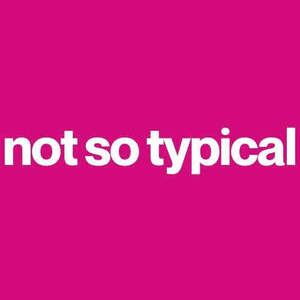

Trade Mark Journal No.2025/021 23 May 2025
UK00004197628 1 May 2025 (35,41)
Mark 1
NOT SO TYPICAL
Mark 2

- Class 35
- Career information and advisory services (other than educational and training advice); Career advisory services (other than education and training advice); Personal management consultancy services; Providing marketing consulting in the field of social media; Media relations services; Providing business information in the field of social media; Advertising and marketing services provided by means of social media; Advertising services to promote public awareness of social issues; Advertising services to promote public awareness in the field of social welfare; Advertising via electronic media and specifically the internet; Promotional marketing services using audiovisual media; Organisation of promotions using audiovisual media; Organisation of promotions using audio-visual media; Presentation of companies on the Internet and other media; Development of business organization strategies relating to corporate social responsibility; Presentation of goods on communication media, for retail purposes; Communication media (Presentation of goods on -), for retail purposes; Retail purposes (Presentation of goods on communication media, for -); Provision of advertising space, time and media; Advertising in the popular and professional press; Arranging subscriptions to information media; Online advertising via a computer communications network; On-line advertising on computer communication networks; Design of advertising logos; Advertising services to create corporate and brand identity; Advertising and marketing; Advertising and marketing consultancy; Brand creation services (advertising and promotion); Brand positioning; Marketing; Advertising services to create brand identity for others; Brand strategy services; Brand positioning services; Advertising copywriting; Influencer marketing; Advertising, marketing and promotional services; Advertising, promotional and marketing services; Marketing, advertising, and promotional services; Promotional marketing; Advertising and marketing services; Design of advertising brochures; Product marketing; Copywriting for advertising and promotional purposes; Business marketing consultancy; Advertising, marketing and promotion services; Marketing, advertising and promotion services; Design of advertising flyers; Marketing consultancy; Consultancy services relating to advertising, publicity and marketing; Promotion [advertising] of business; Developing promotional campaigns for business; Brand creation services; Marketing consulting; Business marketing services; Design of marketing surveys; Graphic advertising services; Digital marketing; Consultancy relating to the organisation of promotional campaigns for business; Distribution of advertising, marketing and promotional material; Organisation of customer loyalty programs for commercial, promotional or advertising purposes; Consultancy regarding advertising communications strategy; Consultancy relating to business advertising; Business marketing consulting services; Marketing services; Targeted marketing; Copywriting; Corporate identity services; Dissemination of advertising, marketing and publicity materials; Advertising, marketing and promotional consultancy, advisory and assistance services; Advertising; Design of advertising materials; Marketing agency services; Investigations of marketing strategy; Advertising and publicity; Publicity and advertising; Brand evaluation services; Advertising and publicity services; Consultancy relating to marketing; Advertising and promotional services; Promotional and advertising services; Promotional advertising services; Development of marketing concepts; Advertising services for the promotion of e-commerce; Business marketing consultation services; Customer loyalty services for commercial, promotional and/or advertising purposes; Business advertising services relating to franchising; Event marketing; Promotion, advertising and marketing of on-line websites; Product merchandising; Creative marketing plan development services; Development of advertising concepts; On-line advertising and marketing services; Consumer profiling for commercial or marketing purposes; Brand testing; Consultancy regarding advertising communication strategies; Business consultancy services relating to the marketing of fund raising campaigns; Research services relating to advertising and marketing; Press advertising consultancy; Business merchandising display services; Developing promotional campaigns for businesses; Business advice relating to strategic marketing; Providing business marketing information; Referral marketing; Advertising and promotion services; Banner advertising; Marketing management advice; Promotional management for sports personalities; Advice in the field of business management and marketing; Development of promotional campaigns; Planning of marketing strategies; Advertising, promotional and public relations services; Development of marketing strategies and concepts; Advertising planning; Direct marketing consulting; Advertising and marketing services provided by means of blogging; Consultancy relating to advertising and promotion services; Professional consultancy relating to marketing; Affiliate marketing; Promotional advertising for exploration projects; Consultancy relating to demographics for marketing purposes; Corporate management consultancy; Advertising and marketing services provided via communications channels; Preparation of advertising campaigns; Providing advice in the field of business management and marketing; Business consultation relating to advertising; Marketing analysis; Business advice relating to marketing; Marketing (Business advice relating to -); Digital advertising services; Consultancy relating to advertising; Business strategy services; Customer club services, for commercial, promotional and/or advertising purposes; Promotional management of celebrities; Business assistance relating to corporate identity; Recruitment advertising.
- Class 41
- Personal coaching [training]; Personal training services; Personal development training; Personal trainer services [fitness training]; Personal fitness training services; Personal trainer services; Provision of training courses in personal development; Training; Personal development courses; Training and further training consultancy; Physical fitness assessment services for training purposes; Life coaching (training); Consultancy relating to physical fitness training; Practical training; Physical fitness training services; Education and training; Physical training services; Fitness training services; Business training; Conducting training sessions on physical fitness online; Career counselling [training and education advice]; Training or education services in the field of life coaching; Coaching [training]; Career counselling relating to education and training; Career and vocational training; Training in business skills; Training services relating to fitness; Exercise [fitness] training services; Fitness and exercise training services; Computer education training; Educational and training services; Vocational training; Career information and advisory services (educational and training advice); Employment training; Training services; Training in the use of computers; Health and fitness training; Computer education training services; Personnel training; Training and education services; Education and training services; Education and training consultancy; Vocational skills training; Career advisory services (education or training advice); Consultancy relating to vocational skills training; Instructional and training services; Education, teaching and training; Conducting workshops and seminars in personal awareness; Teacher training services; Commercial training services; Educational and training services relating to sport; Vocational training services; Training and instruction; Workshops for training purposes; Education services relating to business training; Computer based training; Guidance (Vocational -) [education or training advice]; Vocational guidance [education or training advice]; Business training services; Arranging professional workshop and training courses; Meditation training; Training relating to employment skills; Provision of courses of instruction relating to personal time management; Training consultancy; Providing of training; Providing training; Education and training in the field of business management; Instruction in weight training; Technical training relating to safety; Providing training and educational examination for certification purposes; Organising of commercial training; Vocational education and training services; Training services for personnel; Education services relating to vocational training; Training services relating to occupational health; Educational services relating to sales training; Training in the use of photographic equipment; Training in business management; Training related to nutrition; Providing training courses on business management; Education and training services in relation to business management; Training services relating to computers; Transfer of business knowledge and know-how [training]; Vocational skills training (Provision of -); Recreation and training services; Education and training in the field of occupational health and safety; Organisation of tours for training purposes; Providing online training seminars; Conducting training seminars for clients; Conducting training courses relating to nutrition online; Educational and training services relating to healthcare; Organisation of training seminars; Management training services; Consultancy services relating to the education and training of management and of personnel; Gymnasium services relating to weight training; Training (Practical -) [demonstration]; Practical training [demonstration]; Provision of training and education; Provision of education and training; Training in yoga; Courses (Training -) relating to customer services; Provision of audio and visual media via communications networks; Entertainment services in the nature of organizing social entertainment events; Provision of entertainment services through the media of video-films; Provision of entertainment services through the media of publications; Entertainment services in the nature of arranging social entertainment events.
Rhiannon Cooper